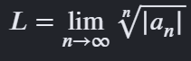

1. Contexto Histórico y Origen
El desarrollo formal del cálculo de series infinitas alcanzó su madurez rigurosa durante el siglo XIX. El Criterio de la Raíz, conocido tradicionalmente en los círculos matemáticos avanzados como la Prueba de la Raíz de Cauchy, fue estructurado y demostrado por el célebre matemático francés Augustin Louis Cauchy (1789–1857).
Cauchy fue uno de los pioneros en rescatar al cálculo del pragmatismo intuitivo, introduciendo el concepto formal de límite que hoy estudiamos. Publicó este criterio en su obra maestra de 1821, Cours d'Analyse, buscando un método absoluto capaz de desarmar potencias complejas que los criterios de comparación directos de la época no lograban resolver de manera óptima.

(1789 – 1857)
2. Fundamentos y Conceptos Clave
Antes de abordar el algoritmo operativo del criterio, es indispensable cimentar los conceptos básicos del análisis secuencial en cálculo:
¿Qué es una Sucesión y qué es una Serie?
Una sucesión es un conjunto indexado y ordenado de números reales que siguen una regla de asignación fija. Por otro lado, una serie es la suma explícita de todos los términos secuenciales de dicha sucesión.
¿Qué es una Serie Infinita?
Es una adición algebraica que se extiende perpetuamente hacia el infinito, matemáticamente denotada bajo el operador sumatorio sigma como:
Tipos de Series Notables
- Series Geométricas: Cada término se obtiene multiplicando el anterior por una razón constante. Su comportamiento algebraico es la base teórica de la prueba de la raíz.
- Series p-Series (como la Armónica): Cruciales en el análisis de convergencia para comparar velocidades de decrecimiento.
- Series de Potencias: El escenario principal de la ingeniería donde el criterio de la raíz demuestra su máxima utilidad y agilidad operativa.
Los Conceptos de Convergencia y Divergencia
- Convergencia: Ocurre cuando, a medida que sumamos infinitos elementos, el resultado acumulado de las sumas parciales se estabiliza y tiende con precisión a un número real fijo y finito.
- Divergencia: Se presenta cuando la suma acumulada crece sin límites hacia el infinito ($\infty$), o en su defecto, oscila de forma indeterminada sin establecerse jamás en un valor.
3. El Criterio de la Raíz (Teorema Central)
El criterio se activa como un mecanismo infalible cuando el término general $a_n$ de la serie está afectado por completo por un exponente variable $n$. Operativamente, el teorema nos instruye a evaluar el límite al infinito de la raíz enésima:

4. Leyes de Interpretación del Límite (L)
Una vez calculado y obtenido el valor numérico del límite resultante ($L$), se aplican de forma estricta las tres leyes universales del test de Cauchy:
La serie es totalmente estable. Su suma infinita converge con precisión a un valor numérico real fijo.
La serie carece de límite finito. La suma total explota numéricamente hacia el infinito.
La prueba es incapaz de decidir. El estudiante debe descartar el método y utilizar otra vía analítica.
5. Módulo Práctico y Ejercicios Propuestos
Componente interactivo diseñado para el autoaprendizaje y refuerzo grupal en el aula. Desarrolle los límites en su cuaderno y valide sus conclusiones analíticas pulsando las opciones:
∑(n=1 → ∞) (4n + 1 / 2n + 5)n
Aplique la propiedad fundamental para anular el exponente y resuelva la razón de polinomios de igual grado al infinito.
∑(n=1 → ∞) (3 / n)n
Evalúe con cautela el comportamiento del denominador conforme la variable de control n tiende al infinito absoluto.
∑(n=1 → ∞) (n / 2n + 1)3n
Cuidado con la potencia cúbica remanente posterior a la simplificación de la raíz enésima del término.